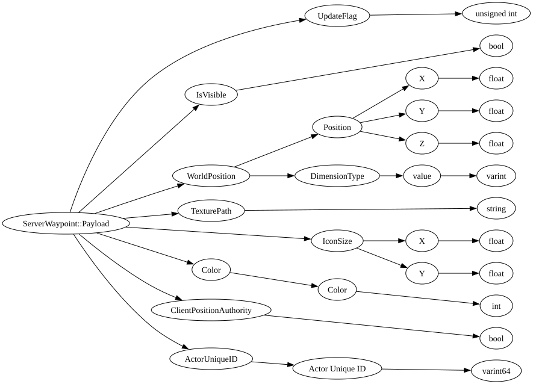

| Field Name | Field Type | Field Constraints | Field Notes |
|---|---|---|---|
| UpdateFlag | unsigned int | <div style="padding-left: 0px;">Minimum = 0</div> | A bitflag uint used to map to which of the optional values in this payload should be updated. |
| IsVisible | bool | Boolean used to tell the client if the Waypoint is visible or not. | |
| WorldPosition | WorldPosition | The Vec3 position and DimensionID of the waypoint. | |
| TexturePath | string | The path used to select which texture the Waypoint displays. | |
| IconSize | Vec2 | The size of the icon that is displayed. Default: [1, 1] | |
| Color | Color | The color that the client with tint the waypoint texture. | |
| ClientPositionAuthority | bool | Boolean that if true the client will update the Waypoints position per tick. | |
| ActorUniqueID | ActorUniqueID | The entity id that Waypoint will be attached to. |